class: center, middle # Lecture 6: ### Neural Networks, Convolutions, Architectures Andrei Bursuc - Florent Krzakala - Marc Lelarge <br/> <br/> .center[<img src="images/logos.png" style="width: 700px;" />] .citation.tiny[ With slides from A. Karpathy, F. Fleuret, J. Johnson, S. Yeung, A. Vedaldi ...] --- ## Recap .left[ - Gradient descent - Backpropagation - Hand crafted features - FeedForward Networks - Practical PyTorch: Clustering, Recsys, Triplet Loss ] --- ## Recap .center[<img src="images/enigma_1.png" style="width: 760px;" />] --- ## Recap .center[<img src="images/enigma_2.png" style="width: 760px;" />] --- ## Recap .center[<img src="images/enigma_3.png" style="width: 760px;" />] --- ## Recap .center[] --- ## Today .left[ - Neural networks - Activation functions - Deep regularization - Convolutional layers - CNN architectures - Practical PyTorch: Sentiment analysis ] --- class: center, middle # Neural Networks --- ## Neural Network for classification (__Before__) Linear score function: $f = Wx$ --- ## Neural Network for classification (__Before__) Linear score function: $f = Wx$ (__Now__) 2-layer neural network: $f = W_2 max(0, W_1X)$ .footnote.center[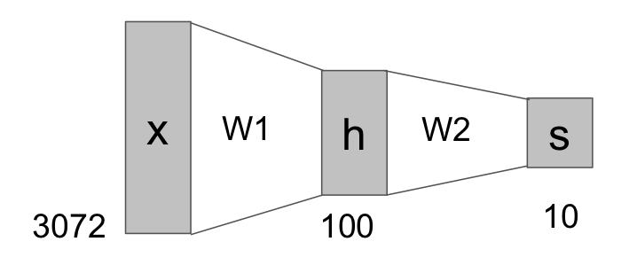] --- ## Neural Network for classification (__Before__) Linear score function: $f = Wx$ (__Now__) 2-layer neural network: $f = W_2 max(0, W_1X)$ Or a 3-layer neural network: $f = W_3 max(0,W_2 max(0, W_1X))$ .footnote.center[] .credit[Slide credit: A. Karpathy] --- ## Neural Network for classification ### The neuron - Inspired by neuroscience and human brain, but resemblances do not go too far .center[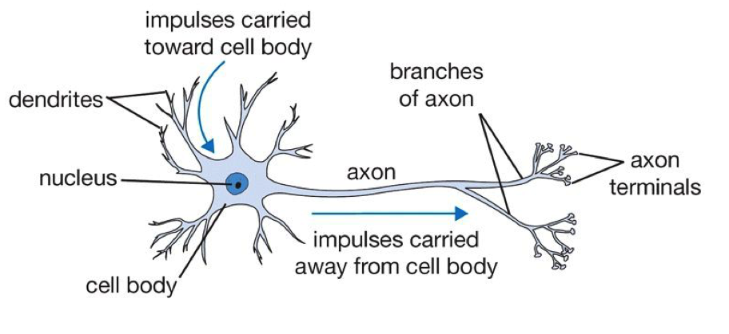] - In fact there several types of neurons with different functions and the metaphor does not hold everywhere .credit[Slide credit: A. Karpathy] --- ## Neural Network for classification ### The neuron Inspired by neuroscience and human brain, but resemblances do not go too far .center[<img src="images/neuron_2.png" style="height: 350px;"/>] .credit[Slide credit: A. Karpathy] --- ## Neural Network for classification Inspired by neuroscience and human brain, but resemblances do not go too far .center[<img src="images/neuron_3.png" style="height: 350px;"/>] .credit[Slide credit: A. Karpathy] --- ## Multi-layer neural networks - __Training__: find network weights $w$ to minimize the error between true training labels $y_i$ and estimated labels $f_w(x_i)$: $$ E(w)= \sum_{i=1}^{N}{(y_i - f_w(x_i))^2} $$ - Minimization can be done by gradient descent (if $f$ is differentiable) + the training method is called __backpropagation__ .center[<img src="images/mlp_2.png" style="height: 200px;"/>] --- ## Discovery of oriented cells in the visual cortex .center[<img src="images/hubel.png" style="height: 400px;"/>] .citation.tiny[Hubel& Wiesel, 1959] --- ## Discovery of oriented cells in the visual cortex Find out more from [video](https://www.youtube.com/watch?v=IOHayh06LJ4) .center[<img src="images/cat_neuron.png" style="height: 400px;"/>] .citation.tiny[Hubel& Wiesel, 1959] --- ## Mark I Perceptron - first implementation of the perceptron algorithm - the machine was connected to a camera that used 20x20 cadmium sulfide photocells to produce a 400-pixel image - it recognized letter of the alphabet .left-column[ .center[<img src="images/percept_eq.png" style="height: 50px;"/>] .center[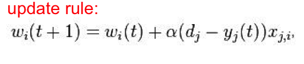] ] .right-column[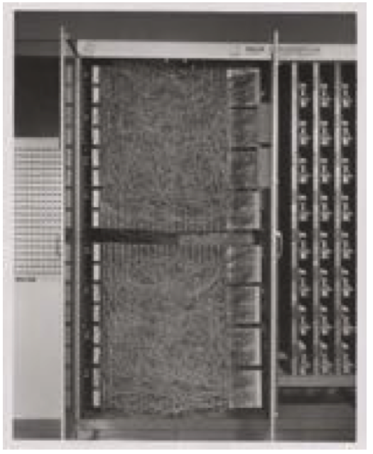] .reset-column[ ] .citation.tiny[Rosenblatt, 1957] --- ## Neural Network for classification - Vector function with tunable parameters $\theta$ / $W$ $$ \mathbf{f}(\cdot; \mathbf{\theta}): \mathbb{R}^N \rightarrow (0, 1)^K $$ - $s$ sample in dataset $S$: - input: $\mathbf{x}^s \in \mathbb{R}^N$ - expected output: $y^s \in [0, K-1]$ - probability: $\mathbf{f}(\mathbf{x}^s;\mathbf{\theta})_c = p(Y=c|X=\mathbf{x}^s)$ .credit[Slide credit: C. Ollion & O. Grisel] --- ## Artificial Neuron .center[ <img src="images/artificial_neuron.svg" style="width: 400px;" /> ] .credit[Slide credit: C. Ollion & O. Grisel] -- <br/> .center[ $z(\mathbf{x}) = \mathbf{w}^T \mathbf{x} + b$ $f(\mathbf{x}) = g(\mathbf{w}^T \mathbf{x} + b)$ ] - $\mathbf{x}, f(\mathbf{x}) \,\,$ input and output - $z(\mathbf{x})\,\,$ pre-activation - $\mathbf{w}, b\,\,$ weights and bias - $g$ activation function .credit[Slide credit: C. Ollion & O. Grisel] --- ## More neurons -> more capacity .center[ <img src="images/num_neurons.png" style="width: 780px;" /> ] --- ## Layer of Neurons .center[ <img src="images/neural_network.svg" style="width: 400px;" /> ] .credit[Slide credit: C. Ollion & O. Grisel] -- <br/><br/> .center[ $\mathbf{f}(\mathbf{x}) = g(\textbf{z(x)}) = g(\mathbf{W} \mathbf{x} + \mathbf{b})$ ] <br/> - $\mathbf{W}, \mathbf{b}\,\,$ now matrix and vector .credit[Slide credit: C. Ollion & O. Grisel] --- ## One Hidden Layer Network .center[ <img src="images/neural_network_hidden_1.svg" style="width: 700px;" /> ] <br/> - $\mathbf{z}^h(\mathbf{x}) = \mathbf{W}^h \mathbf{x} + \mathbf{b}^h$ - <span style="color:#cccccc"> $\mathbf{h}(\mathbf{x}) = g(\mathbf{z}^h(\mathbf{x})) = g(\mathbf{W}^h \mathbf{x} + \mathbf{b}^h)$</span> - <span style="color:#cccccc"> $\mathbf{z}^o(\mathbf{x}) = \mathbf{W}^o \mathbf{h}(\mathbf{x}) + \mathbf{b}^o$</span> - <span style="color:#cccccc"> $\mathbf{f}(\mathbf{x}) = softmax(\mathbf{z}^o) = softmax(\mathbf{W}^o \mathbf{h}(\mathbf{x}) + \mathbf{b}^o)$</span> .credit[Slide credit: C. Ollion & O. Grisel] ??? also named multi-layer perceptron (MLP) feed forward, fully connected neural network logistic regression is the same without the hidden layer --- ## One Hidden Layer Network .center[ <img src="images/neural_network_hidden_2.svg" style="width: 700px;" /> ] <br/> - <span style="color:#cccccc"> $\mathbf{z}^h(\mathbf{x}) = \mathbf{W}^h \mathbf{x} + \mathbf{b}^h$</span> - $\mathbf{h}(\mathbf{x}) = g(\mathbf{z}^h(\mathbf{x})) = g(\mathbf{W}^h \mathbf{x} + \mathbf{b}^h)$ - <span style="color:#cccccc"> $\mathbf{z}^o(\mathbf{x}) = \mathbf{W}^o \mathbf{h}(\mathbf{x}) + \mathbf{b}^o$</span> - <span style="color:#cccccc"> $\mathbf{f}(\mathbf{x}) = softmax(\mathbf{z}^o) = softmax(\mathbf{W}^o \mathbf{h}(\mathbf{x}) + \mathbf{b}^o)$</span> .credit[Slide credit: C. Ollion & O. Grisel] --- ## One Hidden Layer Network .center[ <img src="images/neural_network_hidden_3.svg" style="width: 700px;" /> ] <br/> - <span style="color:#cccccc"> $\mathbf{z}^h(\mathbf{x}) = \mathbf{W}^h \mathbf{x} + \mathbf{b}^h$</span> - <span style="color:#cccccc"> $\mathbf{h}(\mathbf{x}) = g(\mathbf{z}^h(\mathbf{x})) = g(\mathbf{W}^h \mathbf{x} + \mathbf{b}^h)$</span> - $\mathbf{z}^o(\mathbf{x}) = \mathbf{W}^o \mathbf{h}(\mathbf{x}) + \mathbf{b}^o$ - <span style="color:#cccccc"> $\mathbf{f}(\mathbf{x}) = softmax(\mathbf{z}^o) = softmax(\mathbf{W}^o \mathbf{h}(\mathbf{x}) + \mathbf{b}^o)$</span> .credit[Slide credit: C. Ollion & O. Grisel] --- ## One Hidden Layer Network .center[ <img src="images/neural_network_hidden_4.svg" style="width: 700px;" /> ] <br/> - <span style="color:#cccccc"> $\mathbf{z}^h(\mathbf{x}) = \mathbf{W}^h \mathbf{x} + \mathbf{b}^h$</span> - <span style="color:#cccccc"> $\mathbf{h}(\mathbf{x}) = g(\mathbf{z}^h(\mathbf{x})) = g(\mathbf{W}^h \mathbf{x} + \mathbf{b}^h)$</span> - <span style="color:#cccccc">$\mathbf{z}^o(\mathbf{x}) = \mathbf{W}^o \mathbf{h}(\mathbf{x}) + \mathbf{b}^o$</span> - $\mathbf{f}(\mathbf{x}) = softmax(\mathbf{z}^o) = softmax(\mathbf{W}^o \mathbf{h}(\mathbf{x}) + \mathbf{b}^o)$ .credit[Slide credit: C. Ollion & O. Grisel] --- ## One Hidden Layer Network .center[<img src="images/neural_network_hidden_t.svg" style="width: 700px;" />] ### Alternate representation .center[<img src="images/flow_graph.svg" style="width: 500px;" /> ] .credit[Slide credit: C. Ollion & O. Grisel] --- ## One Hidden Layer Network .center[ <img src="images/neural_network_hidden_t.svg" style="width: 700px;" /> ] <br> ### PyTorch implementation ```py model = torch.nn.Sequential( torch.nn.Linear(D_in, H), # weight matrix dim [D_in x H] torch.nn.Tanh(), torch.nn.Linear(H, D_out), # weight matrix dim [H x D_out] torch.nn.Softmax(), ) ``` --- ## Element-wise activation functions <br/> .center[ <img src="images/activation_functions.svg" style="width: 780px;" /> ] <br/></br> - blue: activation function - green: derivative .credit[Slide credit: C. Ollion & O. Grisel] --- ## Element-wise activation functions - [Many other activation functions available](https://dashee87.github.io/data%20science/deep%20learning/visualising-activation-functions-in-neural-networks/): <br/> .center[ <img src="images/activation_functions.png" style="height: 500px;" /> ] --- ## Universal approximation We can approximate any $f \in \mathscr{C}([a,b],\mathbb{R})$ with a linear combination of translated/scaled ReLU functions .center[ 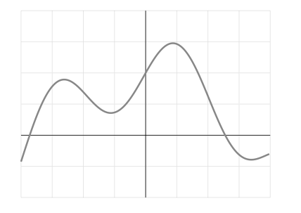 ] .credit[Slide credit: F. Fleuret] --- ## Universal approximation We can approximate any $f \in \mathscr{C}([a,b],\mathbb{R})$ with a linear combination of translated/scaled ReLU functions .center[ 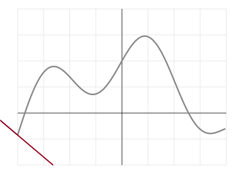 ] .credit[Slide credit: F. Fleuret] --- ## Universal approximation We can approximate any $f \in \mathscr{C}([a,b],\mathbb{R})$ with a linear combination of translated/scaled ReLU functions .center[ <img src="images/relu_3.png" style="height: 300px;" /> ] .credit[Slide credit: F. Fleuret] --- ## Universal approximation We can approximate any $f \in \mathscr{C}([a,b],\mathbb{R})$ with a linear combination of translated/scaled ReLU functions .center[ <img src="images/relu_4.png" style="height: 300px;" /> ] .credit[Slide credit: F. Fleuret] --- ## Universal approximation We can approximate any $f \in \mathscr{C}([a,b],\mathbb{R})$ with a linear combination of translated/scaled ReLU functions .center[ <img src="images/relu_5.png" style="height: 300px;" /> ] .credit[Slide credit: F. Fleuret] --- ## Universal approximation We can approximate any $f \in \mathscr{C}([a,b],\mathbb{R})$ with a linear combination of translated/scaled ReLU functions .center[ <img src="images/relu_6.png" style="height: 300px;" /> ] .credit[Slide credit: F. Fleuret] --- ## Universal approximation We can approximate any $f \in \mathscr{C}([a,b],\mathbb{R})$ with a linear combination of translated/scaled ReLU functions .center[ <img src="images/relu_7.png" style="height: 300px;" /> ] .credit[Slide credit: F. Fleuret] --- ## Universal approximation We can approximate any $f \in \mathscr{C}([a,b],\mathbb{R})$ with a linear combination of translated/scaled ReLU functions .center[ <img src="images/relu_8.png" style="height: 300px;" /> ] .credit[Slide credit: F. Fleuret] --- ## Universal approximation We can approximate any $f \in \mathscr{C}([a,b],\mathbb{R})$ with a linear combination of translated/scaled ReLU functions .center[ 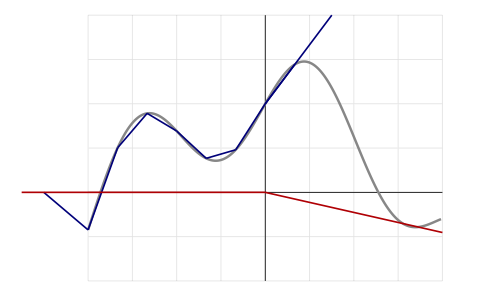 ] .credit[Slide credit: F. Fleuret] --- ## Universal approximation We can approximate any $f \in \mathscr{C}([a,b],\mathbb{R})$ with a linear combination of translated/scaled ReLU functions .center[ 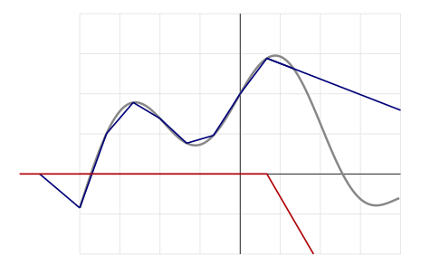 ] .credit[Slide credit: F. Fleuret] --- ## Universal approximation We can approximate any $f \in \mathscr{C}([a,b],\mathbb{R})$ with a linear combination of translated/scaled ReLU functions .center[ <img src="images/relu_11.png" style="height: 300px;" /> ] .credit[Slide credit: F. Fleuret] --- ## Universal approximation We can approximate any $f \in \mathscr{C}([a,b],\mathbb{R})$ with a linear combination of translated/scaled ReLU functions .center[ <img src="images/relu_12.png" style="height: 300px;" /> ] .credit[Slide credit: F. Fleuret] --- ## Universal approximation We can approximate any $f \in \mathscr{C}([a,b],\mathbb{R})$ with a linear combination of translated/scaled ReLU functions .center[ <img src="images/relu_13.png" style="height: 300px;" /> ] .credit[Slide credit: F. Fleuret] --- ## Universal approximation We can approximate any $f \in \mathscr{C}([a,b],\mathbb{R})$ with a linear combination of translated/scaled ReLU functions .center[ <img src="images/relu_14.png" style="height: 300px;" /> ] .credit[Slide credit: F. Fleuret] --- ## Universal approximation We can approximate any $f \in \mathscr{C}([a,b],\mathbb{R})$ with a linear combination of translated/scaled ReLU functions .center[ <img src="images/relu_15.png" style="height: 300px;" /> ] .credit[Slide credit: F. Fleuret] --- ## Universal approximation We can approximate any $f \in \mathscr{C}([a,b],\mathbb{R})$ with a linear combination of translated/scaled ReLU functions .center[ <img src="images/relu_16.png" style="height: 300px;" /> ] .credit[Slide credit: F. Fleuret] This is true for other activation functions under mild assumptions --- ## Dropout - First "deep" regularization technique - Remove units at random during the forward pass on each sample - Put them all back during test .center[ <img src="images/dropout.png" style="width: 680px;" /> ] .citation.tiny[Dropout: A Simple Way to Prevent Neural Networks from Overfitting, Srivastava et al., JMLR 2014] --- # Dropout ### Interpretation - Reduces the network dependency to individual neurons and distributes representation - More redundant representation of data ### Ensemble interpretation - Equivalent to training a large ensemble of shared-parameters, binary-masked models - Each model is only trained on a single data point - _A network with dropout can be interpreted as an ensemble of $2^N$ models with heavy weight sharing_ (Goodfellow _et al._, 2013) --- ## Dropout .center[ <img src="images/dropout_traintest.png" style="width: 600px;" /><br/> ] - One has to decide on which units/layers to use dropout, and with what probability $p$ units are dropped. - During training, for each sample, as many Bernoulli variables as units are sampled independently to select units to remove. - To keep the means of the inputs to layers unchanged, the initial version of dropout was multiplying activations by $p$ during test. - The standard variant is the "inverted dropout": multiply activations by $\frac{1}{1-p}$ during training and keep the network untouched during test. --- ## Dropout Overfitting noise .center[<img src="images/dropout_curves_1.svg" style="width: 600px;" /><br/> ] .credit[Slide credit: C. Ollion & O. Grisel] --- ## Dropout A bit of Dropout .center[<img src="images/dropout_curves_2.svg" style="width: 600px;" /><br/> ] .credit[Slide credit: C. Ollion & O. Grisel] --- ## Dropout Too much: underfitting .center[<img src="images/dropout_curves_3.svg" style="width: 600px;" /><br/> ] .credit[Slide credit: C. Ollion & O. Grisel] --- ## Dropout Features learned on MNIST with one hidded layer autoencoders having 256 rectified linear units .center[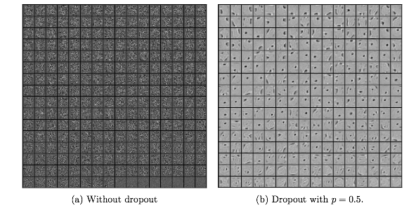<br/> ] .citation.tiny[Dropout: A Simple Way to Prevent Neural Networks from Overfitting, Srivastava et al., JMLR 2014] --- ## Dropout ```py >>> x = Variable(torch.Tensor(3, 9).fill_ (1.0), requires_grad = True) >>> x.data 1 1 1 1 1 1 1 1 1 1 1 1 1 1 1 1 1 1 1 1 1 1 1 1 1 1 1 [torch.FloatTensor of size 3x9] >>> dropout = nn.Dropout(p = 0.75) >>> y = dropout(x) >>> y.data 4 0 4 4 4 0 4 0 0 4 0 0 0 0 0 0 0 0 0 0 0 0 4 0 4 0 4 [torch.FloatTensor of size 3x9] >>> l = y.norm(2, 1).sum() >>> l.backward() >>> x.grad.data 1.7889 0.0000 1.7889 1.7889 0.0000 0.0000 1.7889 0.0000 0.0000 4.0000 0.0000 0.0000 1.7889 0.0000 0.0000 0.0000 2.3094 0.0000 0.0000 0.0000 0.0000 0.0000 2.3094 0.0000 0.0000 0.0000 2.3094 [torch.FloatTensor of size 3x9] ``` --- ## Dropout For a given network ```py model = nn.Sequential(nn.Linear(10, 100), nn.ReLU(), nn.Linear(100, 50), nn.ReLU(), nn.Linear(50, 2)); ``` -- we can simply add dropout layers ```py model = nn.Sequential(nn.Linear(10, 100), nn.ReLU(), * nn.Dropout(), nn.Linear(100, 50), nn.ReLU(), * nn.Dropout(), nn.Linear(50, 2)); ``` --- ## Dropout .red[A model using dropout has to be set in "train" or "test" mode ] --- ## Dropout .red[A model using dropout has to be set in "train" or "test" mode ] The method `nn.Module.train(mode)` recursively sets the flag `training` to all sub-modules. ```py >>> dropout = nn.Dropout() >>> model = nn.Sequential(nn.Linear(3, 10), dropout, nn.Linear(10, 3)) >>> dropout.training True >>> model.train(False) Sequential ( (0): Linear (3 -> 10) (1): Dropout (p = 0.5) (2): Linear (10 -> 3) ) >>> dropout.training False ``` --- ## Spatial Dropout As pointed out by Tompson _et al._ (2015), units in a 2d activation map are generally locally correlated, and dropout has virtually no effect. They proposed SpatialDropout, which drops channels instead of individual units. .credit[Slide credit: F. Fleuret] --- ## Spatial Dropout ```py >>> dropout2d = nn.Dropout2d() >>> x = Variable(Tensor(2, 3, 2, 2).fill_(1.0)) >>> dropout2d(x) Variable containing: (0 ,0 ,.,.) = 0 0 0 0 (0 ,1 ,.,.) = 0 0 0 0 (0 ,2 ,.,.) = 2 2 2 2 (1 ,0 ,.,.) = 2 2 2 2 (1 ,1 ,.,.) = 0 0 0 0 (1 ,2 ,.,.) = 2 2 2 2 [torch.FloatTensor of size 2x3x2x2] ``` --- ## Batch normalization We saw that maintaining proper statistics of the activations and derivatives was a critical issue to allow the training of deep architectures. It is the main motivation behind weight initialization rules (we'll cover them later). --- ## Batch normalization We saw that maintaining proper statistics of the activations and derivatives was a critical issue to allow the training of deep architectures. It is the main motivation behind weight initialization rules (we'll cover them later). A different approach consists of explicitly forcing the activation statistics during the forward pass by re-normalizing them. __Batch normalization__ proposed by Ioffe and Szegedy (2015) was the first method introducing this idea. --- ## Batch normalization Normalize activations in each **mini-batch** before activation function: **speeds up** and **stabilizes** training (less dependent on init) Batch normalization forces the activation first and second order moments, so that the following layers do not need to adapt to their drift. --- ## Batch normalization Normalize activations in each **mini-batch** before activation function: **speeds up** and **stabilizes** training (less dependent on init) .center[ <img src="images/batchnorm.png" style="width: 450px;" /> ] <br/> .citation.tiny[Batch normalization: Accelerating deep network training by reducing internal covariate shift, Ioffe and Szegedy, ICML 2015] --- ## Batch normalization During training batch normalization __shifts and rescales according to the mean and variance estimated on the batch__. .center[ <img src="images/batchnorm.png" style="width: 450px;" /> ] As for dropout, the model behaves differently during train and test. --- ## Batch normalization At **inference time**, use average and standard deviation computed on **the whole dataset** instead of batch Widely used in **ConvNets**, but requires the mini-batch to be large enough to compute statistics in the minibatch. --- ## Batch normalization As dropout, batch normalization is implemented as a separate module `torch.BatchNorm1d` that processes the input components separately. ```py >>> x = torch.Tensor(10000, 3).normal_() >>> x = x * torch.Tensor([2, 5, 10]) + torch.Tensor([-10, 25, 3]) >>> x = Variable(x) >>> x.data.mean(0) -9.9898 24.9165 2.8945 [torch.FloatTensor of size 3] >>> x.data.std(0) 2.0006 5.0146 9.9501 [torch.FloatTensor of size 3] ``` --- ## Batch normalization Since the module has internal variables to keep statistics, it must be provided with the sample dimension at creation. ```py >>> bn = nn.BatchNorm1d(3) >>> bn.bias.data = torch.Tensor([2, 4, 8]) >>> bn.weight.data = torch.Tensor([1, 2, 3]) >>> y = bn(x) >>> y.data.mean(0) 2.0000 4.0000 8.0000 [torch.FloatTensor of size 3] >>> y.data.std(0) 1.0000 2.0001 3.0001 [torch.FloatTensor of size 3] ``` --- ## Batch normalization `BatchNorm2d` example ```py >>> x = Variable(torch.randn(20, 100, 35, 45)) >>> bn2d = nn.BatchNorm2d(100) >>> y = bn2d(x) >>> x.size() torch.Size([20, 100, 35, 45]) >>> bn2d.weight.data.size() torch.Size([100]) >>> bn2d.bias.data.size() torch.Size([100]) ``` --- ## Batch normalization Results on ImageNet LSVRC 2012: .center[ <img src="images/batchnorm_1.png" style="width: 700px;" /><br/> ] .citation.tiny[Batch normalization: Accelerating deep network training by reducing internal covariate shift, Ioffe and Szegedy, ICML 2015] --- ## Batch normalization Results on ImageNet LSVRC 2012: .center[ <img src="images/batchnorm_1.png" style="width: 600px;" /><br/> ] - learning rate can be greater - dropout and local normalization are not necessary - $L^2$ regularization influence should be reduced .citation.tiny[Batch normalization: Accelerating deep network training by reducing internal covariate shift, Ioffe and Szegedy, ICML 2015] --- ## Batch normalization Deep MLP on a 2d "disc" toy example, with naive Gaussian weight initialization, cross-entropy, standard SGD, $\eta = 0.1$. ```py def create_model(with_batchnorm, nc = 32, depth = 16): modules = [] modules.append(nn.Linear(2, nc)) if with_batchnorm: modules.append(nn.BatchNorm1d(nc)) modules.append(nn.ReLU()) for d in range(depth): modules.append(nn.Linear(nc, nc)) if with_batchnorm: modules.append(nn.BatchNorm1d(nc)) modules.append(nn.ReLU()) modules.append(nn.Linear(nc, 2)) return nn.Sequential(*modules) ``` .credit[Slide credit: F. Fleuret] --- ## Batch normalization .center[ <img src="images/batchnorm_2.png" style="width: 600px;" /><br/> ] .credit[Slide credit: F. Fleuret] --- class: center, middle # Convolutional layers --- ## Why would we need them? If they were handled as normal "unstructured" vectors, large-dimension signals such as sound samples or images would require models of intractable size. For instance a linear layer taking a $256 \times 256$ RGB image as input, and producing an image of same size would require: $$ (256 \times 256 \times 3)ˆ2 \simeq 3.87e+10$$ parameters, with the corresponding memory footprint ($\simeq$150Gb !), and excess of capacity. .credit[Slide credit: F. Fleuret] --- ## Why would we need them? Moreover, this requirement is inconsistent with the intuition that such large signals have some "invariance in translation". __A representation meaningful at a certain location can / should be used everywhere.__ .credit[Slide credit: F. Fleuret] --- ## Why would we need them? Moreover, this requirement is inconsistent with the intuition that such large signals have some "invariance in translation". __A representation meaningful at a certain location can / should be used everywhere.__ A convolutional layer embodies this idea. It applies the same linear transformation locally, everywhere, and preserves the signal structure. .credit[Slide credit: F. Fleuret] --- ## Why would we need them? - One neuron gets specialized for detecting a full-image pattern, while being sensible to translations .center[ <img src="images/mlp_problem_1.png" style="width: 600px;" /><br/> ] --- ## Why would we need them? - Each neuron gets specialized for detecting a full-image pattern. - Neurons from later layer work similarly - This is a big waste of parameters without good performance. .center[ <img src="images/mlp_problem_2.png" style="height: 400px;" /><br/> ] --- # Convolution Discrete convolution (actually cross-correlation) between two functions $f$ and $g$: $$ (f \star g) (x) = \sum\_{a+b=x} f(a) . g(b) = \sum\_{a} f(a) . g(x + a) $$ -- In computer vision, we typically use 2D-convolutions (actually 2D cross-correlation): $$ (f \star g) (x, y) = \sum_n \sum_m f(n, m) . g(x + n, y + m) $$ -- $f$ is a convolution **kernel** applied to the 2-d map $g$ (think image) .credit[Slide credit: C. Ollion & O. Grisel] --- ## Convolution 1d .center[ 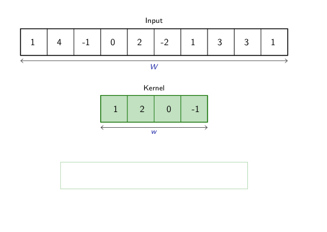<br/> ] .credit[Slide credit: F. Fleuret] --- ## Convolution 1d .center[ 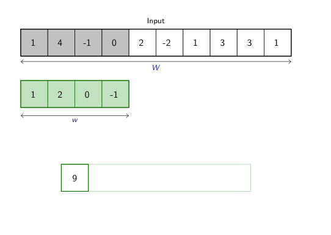<br/> ] .credit[Slide credit: F. Fleuret] --- ## Convolution 1d .center[ 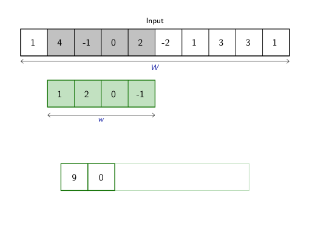<br/> ] .credit[Slide credit: F. Fleuret] --- ## Convolution 1d .center[ 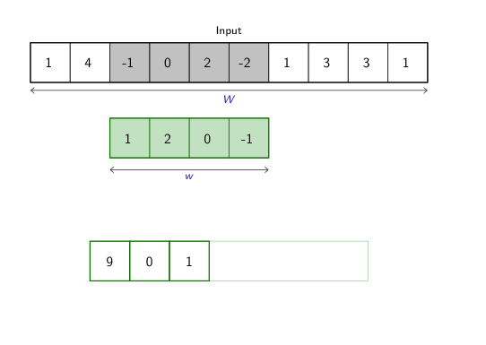<br/> ] .credit[Slide credit: F. Fleuret] --- ## Convolution 1d .center[ 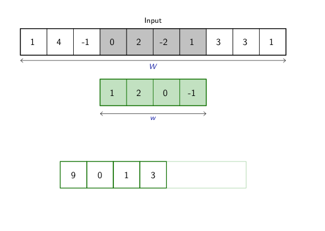<br/> ] .credit[Slide credit: F. Fleuret] --- ## Convolution 1d .center[ 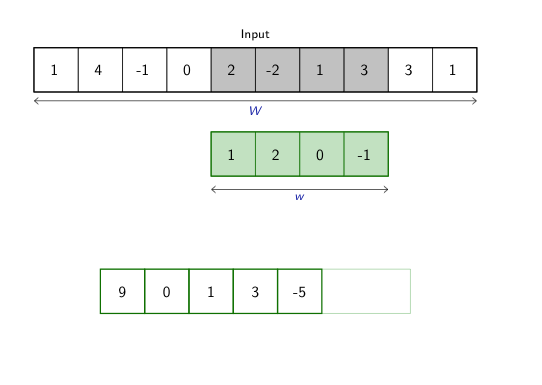<br/> ] .credit[Slide credit: F. Fleuret] --- ## Convolution 1d .center[ 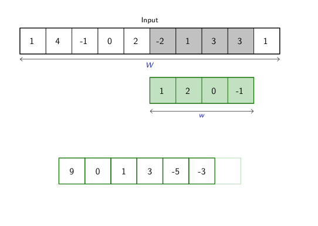<br/> ] .credit[Slide credit: F. Fleuret] --- ## Convolution 1d .center[ 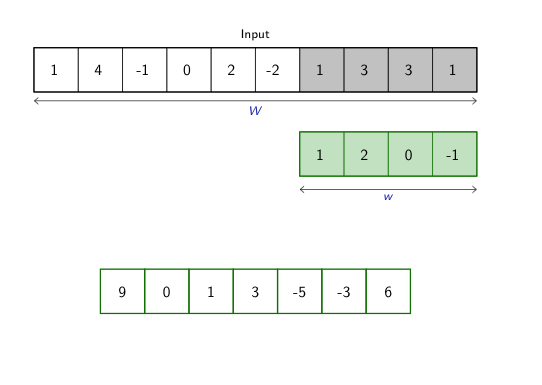<br/> ] .credit[Slide credit: F. Fleuret] --- ## Convolution 1d .center[ 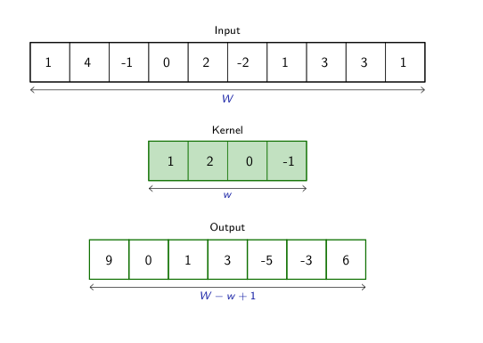<br/> ] .credit[Slide credit: F. Fleuret] --- ## Convolution 2d .center[ 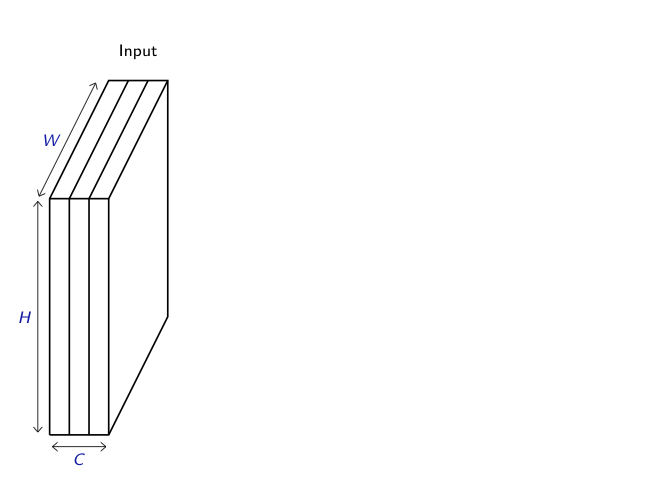<br/> ] .credit[Slide credit: F. Fleuret] --- ## Convolution 2d .center[ 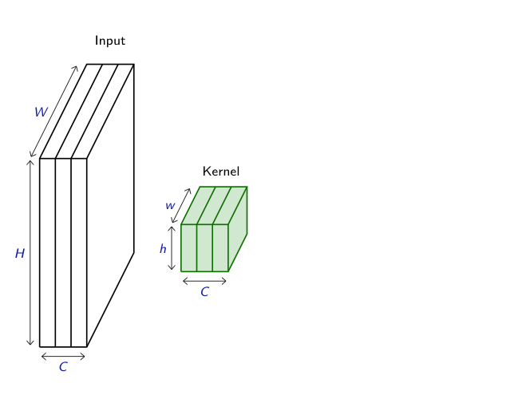<br/> ] .credit[Slide credit: F. Fleuret] --- ## Convolution 2d .center[ 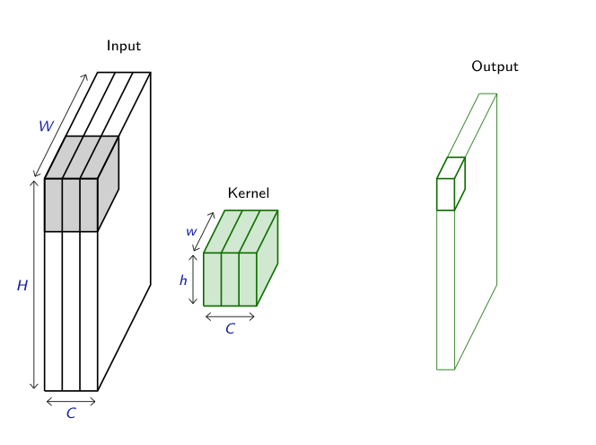<br/> ] .credit[Slide credit: F. Fleuret] --- ## Convolution 2d .center[ 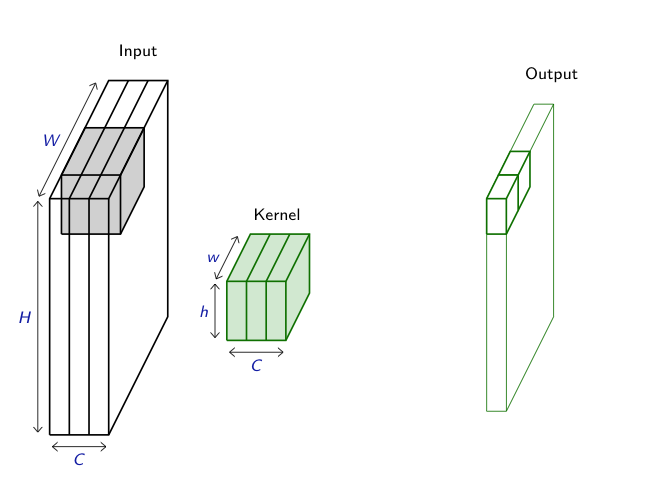<br/> ] .credit[Slide credit: F. Fleuret] --- ## Convolution 2d .center[ 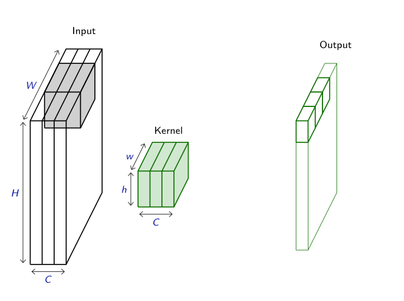<br/> ] .credit[Slide credit: F. Fleuret] --- ## Convolution 2d .center[ 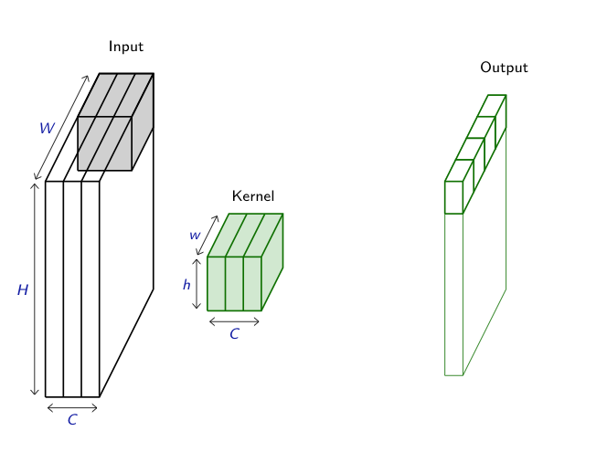<br/> ] .credit[Slide credit: F. Fleuret] --- ## Convolution 2d .center[ 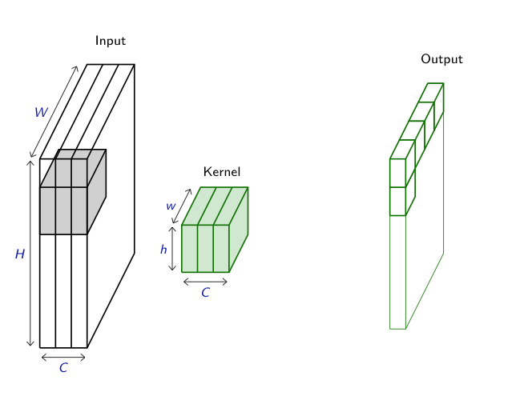<br/> ] .credit[Slide credit: F. Fleuret] --- ## Convolution 2d .center[ 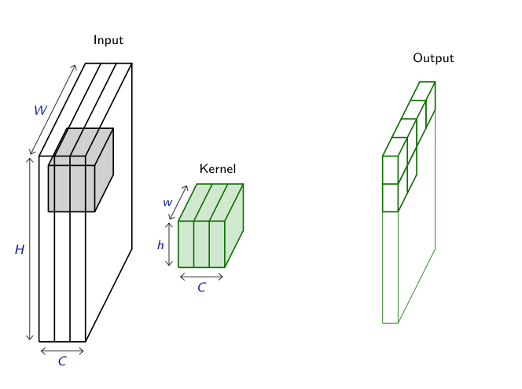<br/> ] .credit[Slide credit: F. Fleuret] --- ## Convolution 2d .center[ 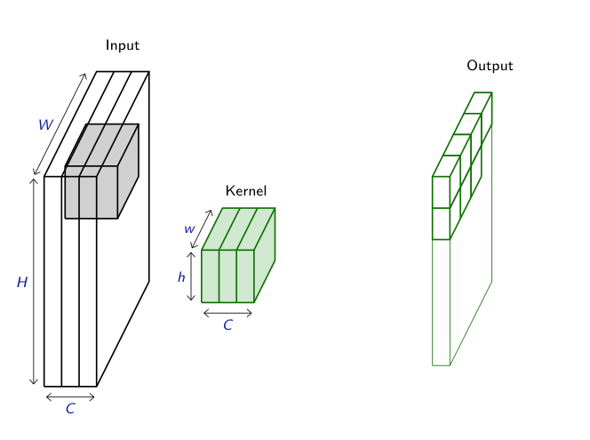<br/> ] .credit[Slide credit: F. Fleuret] --- ## Convolution 2d .center[ 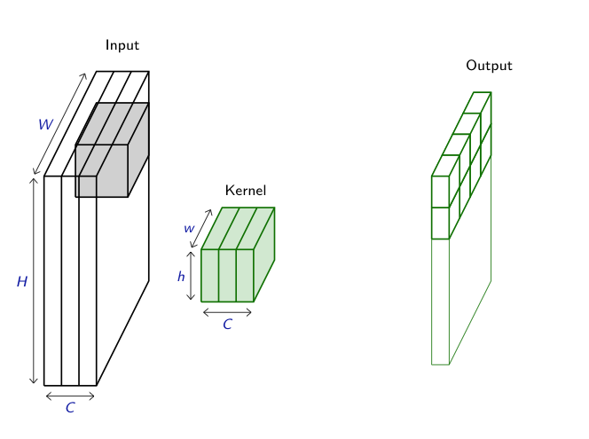<br/> ] .credit[Slide credit: F. Fleuret] --- ## Convolution 2d .center[ <img src="images/conv2d_11.png" style="width: 600px;" /><br/> ] .credit[Slide credit: F. Fleuret] --- ## Convolution 2d .center[ <img src="images/conv2d_12.png" style="width: 600px;" /><br/> ] .credit[Slide credit: F. Fleuret] --- ## Convolution 2d .center[ 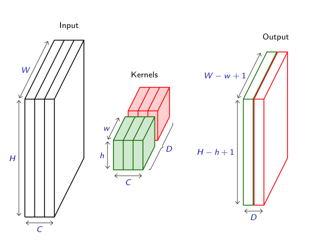<br/> ] .credit[Slide credit: F. Fleuret] --- ## A convolution on an image - Image: $im$ of dimensions $5 \times 5$ - Kernel: $k$ of dimensions $3 \times 3$ .center[ <img src="images/numerical_no_padding_no_strides.gif" style="width: 360px;" /> ] .citation.small[ <br/><br/> These slides extensively use convolution visualisation by V. Dumoulin available at https://github.com/vdumoulin/conv_arithmetic ] -- $ (k \star im) (x, y) = \sum\limits\_{n=0}^2 \sum\limits\_{m=0}^2 k(n, m) . im(x + n - 1, y + m - 1) $ .credit[Slide credit: C. Ollion & O. Grisel] --- ## Kernels as neural networks .center[ <img src="images/numerical_no_padding_no_strides_00.png" style="width: 360px;" /> ] - $x$ is a $3 \times 3$ chunk of the image - Each output neuron is parametrized with the kernel weights $\mathbf{w}$ -- The activation obtained by sliding the $3 \times 3$ window and computing: $$ z(x) = relu(\mathbf{w}^T x + b) $$ .credit[Slide credit: C. Ollion & O. Grisel] --- ## Channels Colored image = tensor of shape `(height, width, channels)` -- Convolutions can be computed across channels: .center[ <img src="images/convmap1_dims.svg" style="width: 300px;" /> ] -- $$ (k \star im) (x, y) = \sum\limits\_{c=0}^2 \sum\limits\_{n=0}^4 \sum\limits\_{m=0}^4 k(n, m, c) . im(x + n - 2, y + m - 2, c) $$ --- ## Channels - For first layer, RGB channels of input image can be easily visualized - Number of channels is typically increased at deeper levels of the network .center[ <img src="images/conv_rgb.png" style="width: 500px;" /> ] --- ## Multiple convolutions Each filter generates a one-channel feature map of responses. .center[ <img src="images/convmap1.svg" style="width: 400px;" /> ] .credit[Figure credit: C. Ollion & O. Grisel] --- ## Multiple convolutions Each filter generates a one-channel feature map of responses. .center[ <img src="images/convmap2.svg" style="width: 400px;" /> ] .credit[Figure credit: C. Ollion & O. Grisel] --- ## Multiple convolutions Each filter generates a one-channel feature map of responses. .center[ <img src="images/convmap3.svg" style="width: 400px;" /> ] .credit[Figure credit: C. Ollion & O. Grisel] --- ## Multiple convolutions Each filter generates a one-channel feature map of responses. .center[ <img src="images/convmap4.svg" style="width: 400px;" /> ] .credit[Figure credit: C. Ollion & O. Grisel] --- ## Multiple convolutions Each filter generates a one-channel feature map of responses. .center[ <img src="images/convmap_dims.svg" style="width: 400px;" /> ] -- - Kernel size aka receptive field (usually 1, 3, 5, 7, 11) - Ouput dimension: `length - kernel_size + 1` .credit[Figure credit: C. Ollion & O. Grisel] --- ## Multiple convolutions - Since convolutions output one scalar at a time, they can be seen as an individual neuron from a MLP with a receptive field limited to the dimensions of the kernel - The same neuron is "fired" over multiple areas from the input. .center[ 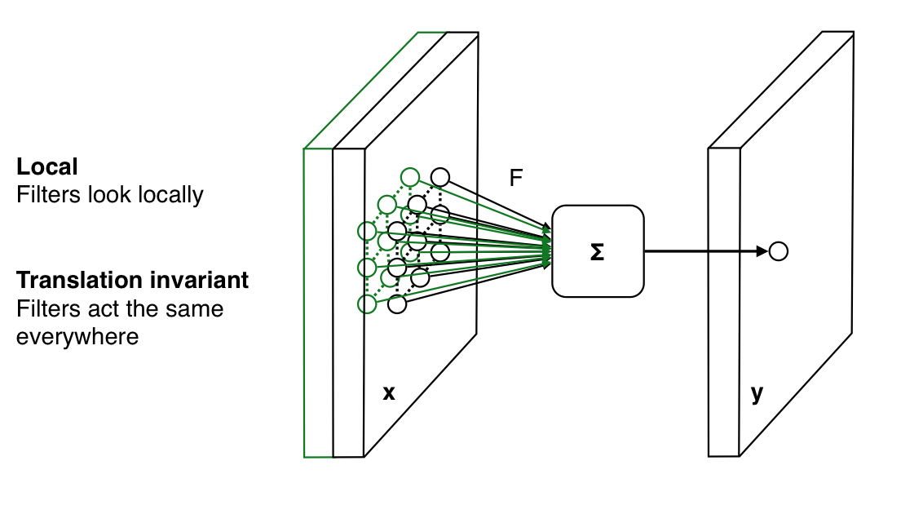 ] --- ## Multiple convolutions - Since convolutions output one scalar at a time, they can be seen as an individual neuron from a MLP with a receptive field limited to the dimensions of the kernel - The same neuron is "fired" over multiple areas from the input. .left-column[ <br> .center[ ] ] .right-column[ .center[.green[Remember this?]] .center[ <img src="images/neuron_1.png" style="width: 350px;" /> ] ] --- ## Multiple convolutions - Since convolutions output one scalar at a time, they can be seen as an individual neuron from a MLP with a receptive field limited to the dimensions of the kernel - The same neuron is "fired" over multiple areas from the input. .left-column[ <br> .center[ 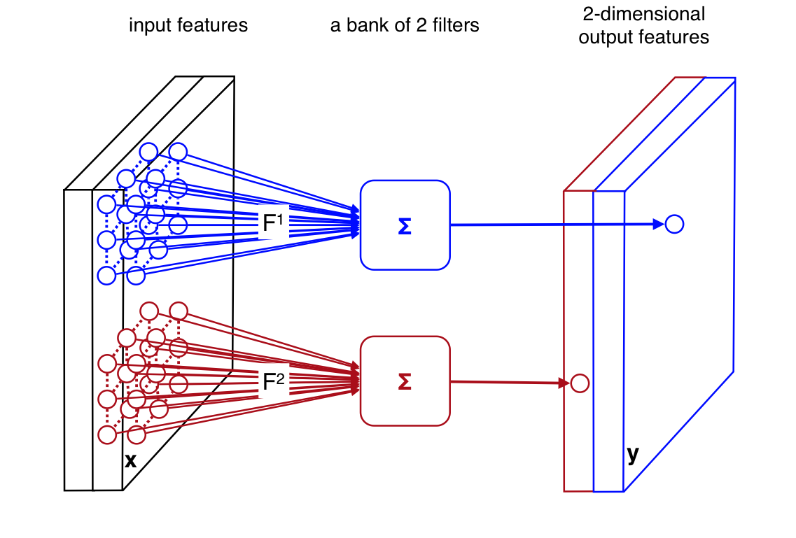 ] ] .right-column[ .center[.green[Remember this?]] .center[ <img src="images/neuron_1.png" style="width: 350px;" /> ] ] --- ## Strides - Strides: increment step size for the convolution operator - Reduces the size of the ouput map .center[ <img src="images/no_padding_strides.gif" style="width: 260px;" /> ] .center.small[ Example with kernel size $3 \times 3$ and a stride of $2$ (image in blue) ] --- ## Padding - Padding: artifically fill borders of image - Useful to keep spatial dimension constant across filters - Useful with strides and large receptive fields - Usually: fill with 0s .center[ <img src="images/same_padding_no_strides.gif" style="width: 260px;" /> ] --- ## Padding - Example: input $C \times 3 \times 5$ .center[ 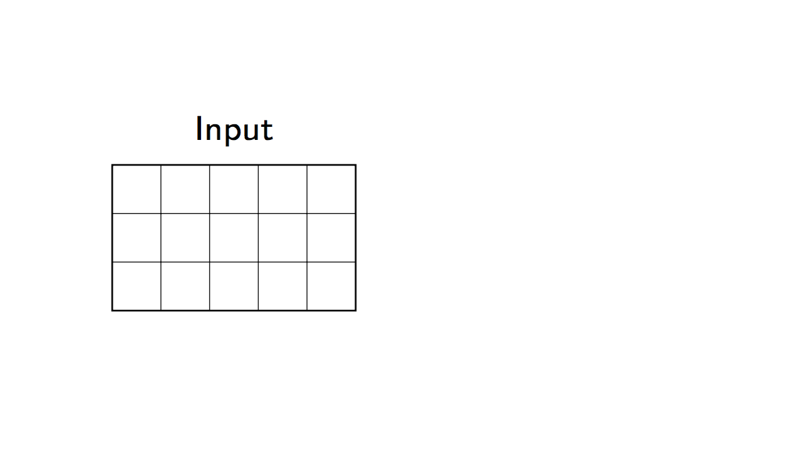 ] .credit[Figure credit: F. Fleuret] --- ## Padding - Example: input $C \times 3 \times 5$, padding of $(2,1)$ .center[ 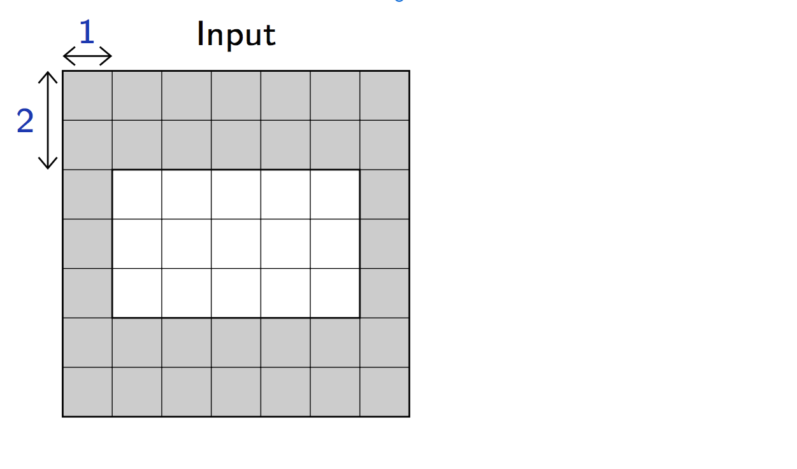 ] .credit[Figure credit: F. Fleuret] --- ## Padding - Example: input $C \times 3 \times 5$, padding of $(2,1)$, a stride of $(2,2)$ .center[ 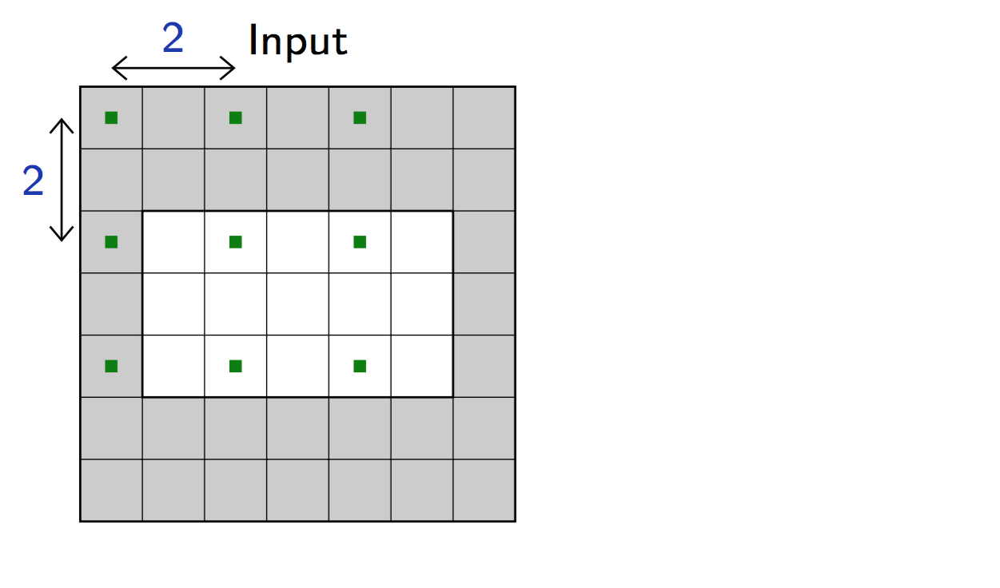 ] .credit[Figure credit: F. Fleuret] --- ## Padding - Example: input $C\times3\times5$, padding of $(2,1)$, a stride of $(2,2)$, kernel of size $C\times3\times5$ .center[ 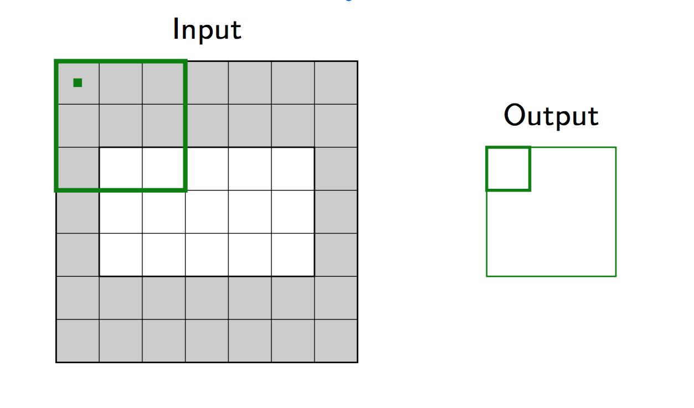 ] .credit[Figure credit: F. Fleuret] --- ## Padding - Example: input $C\times3\times5$, padding of $(2,1)$, a stride of $(2,2)$, kernel of size $C\times3\times5$ .center[ 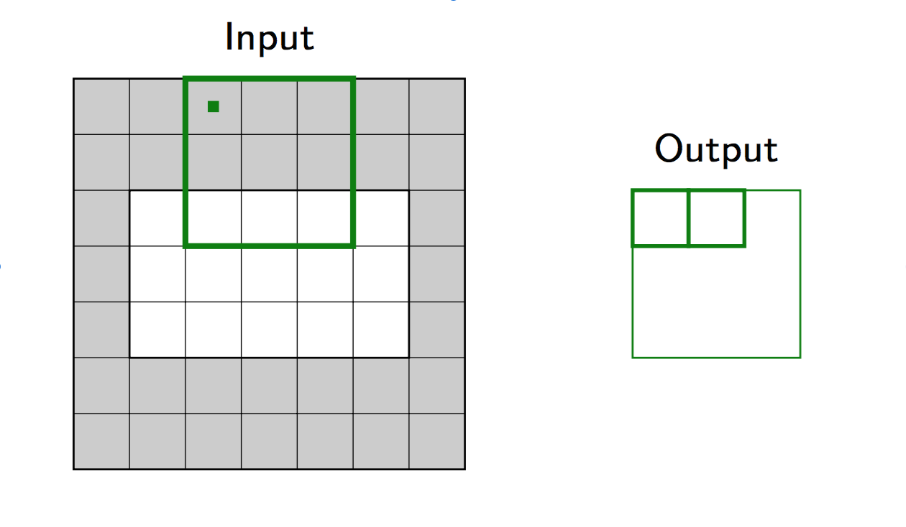 ] .credit[Figure credit: F. Fleuret] --- ## Padding - Example: input $C\times3\times5$, padding of $(2,1)$, a stride of $(2,2)$, kernel of size $C\times3\times5$ .center[ 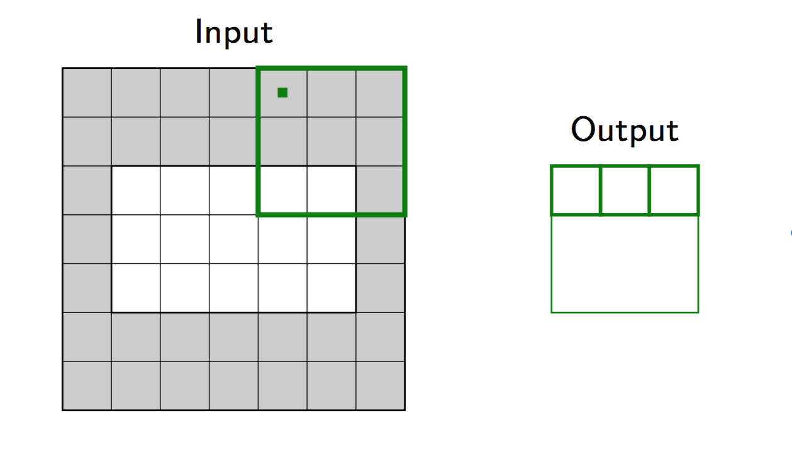 ] .credit[Figure credit: F. Fleuret] --- ## Padding - Example: input $C\times3\times5$, padding of $(2,1)$, a stride of $(2,2)$, kernel of size $C\times3\times5$ .center[ 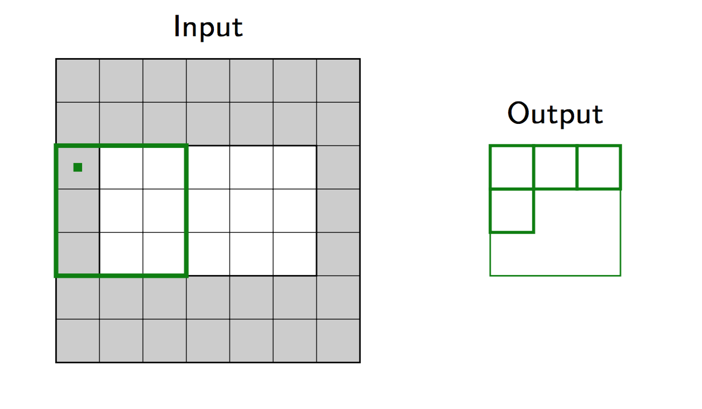 ] .credit[Figure credit: F. Fleuret] --- ## Padding - Example: input $C\times3\times5$, padding of $(2,1)$, a stride of $(2,2)$, kernel of size $C\times3\times5$ .center[ 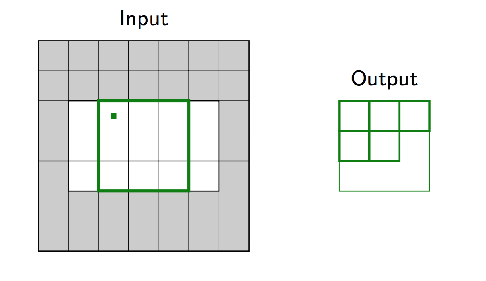 ] .credit[Figure credit: F. Fleuret] --- ## Padding - Example: input $C\times3\times5$, padding of $(2,1)$, a stride of $(2,2)$, kernel of size $C\times3\times5$ .center[ 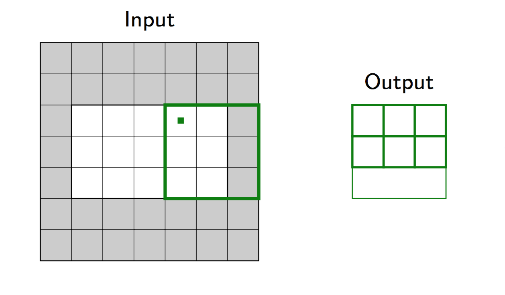 ] .credit[Figure credit: F. Fleuret] --- ## Padding - Example: input $C\times3\times5$, padding of $(2,1)$, a stride of $(2,2)$, kernel of size $C\times3\times5$ .center[ 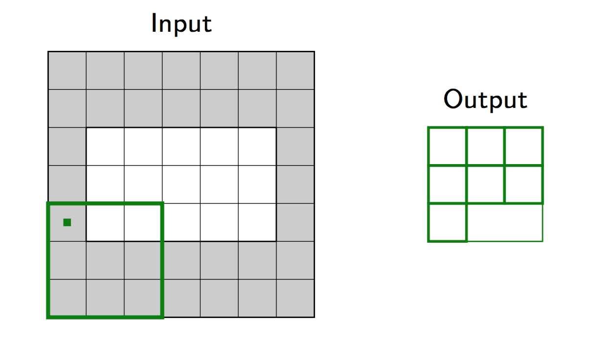 ] .credit[Figure credit: F. Fleuret] --- ## Padding - Example: input $C\times3\times5$, padding of $(2,1)$, a stride of $(2,2)$, kernel of size $C\times3\times5$ .center[ <img src="images/padding_11.png" style="width: 400px;" /> ] .credit[Figure credit: F. Fleuret] --- ## Padding - Example: input $C\times3\times5$, padding of $(2,1)$, a stride of $(2,2)$, kernel of size $C\times3\times5$ .center[ 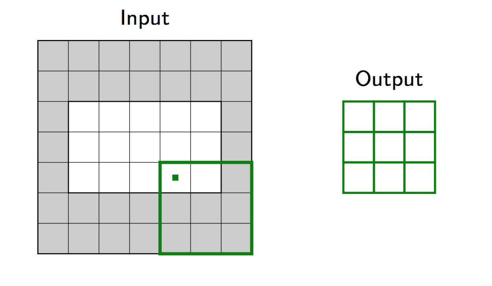 ] .credit[Figure credit: F. Fleuret] --- ## Padding - Example: input $C\times3\times5$, padding of $(2,1)$, a stride of $(2,2)$, kernel of size $C\times3\times5$ .center[ 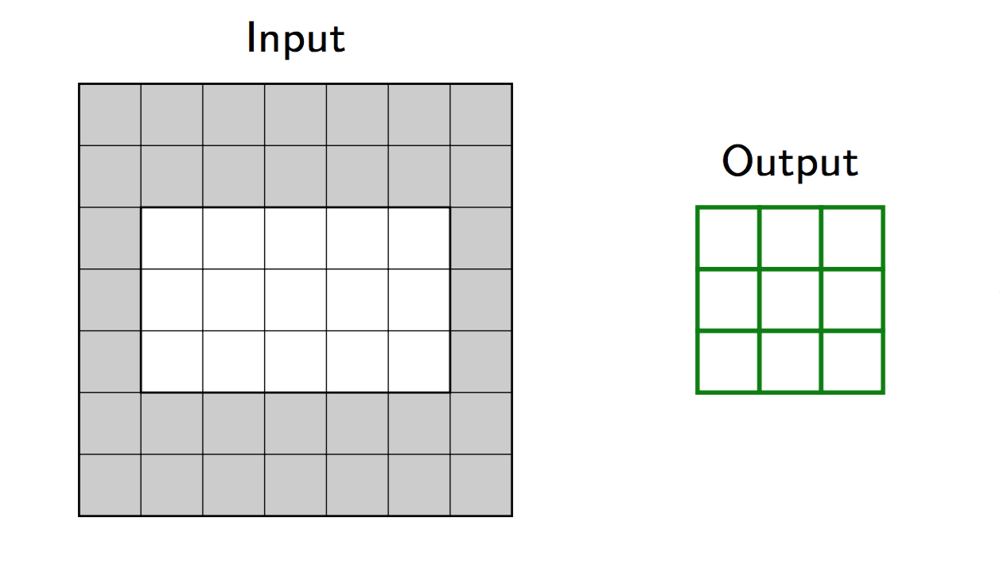 ] .credit[Figure credit: F. Fleuret] --- ## Padding - Example: input $C\times3\times5$, padding of $(2,1)$, a stride of $(2,2)$, kernel of size $C\times3\times5$ .center[ ] - Pooling operations have a default stride equal to their kernel size, and convolutions have a default stride of 1. - Padding can be useful to generate an output of same size as the input. .credit[Figure credit: F. Fleuret] --- ## Dealing with shapes Kernel shape $(F, F, C^i, C^o)$ .left-column[ - $F \times F$ kernel size, - $C^i$ input channels - $C^o$ output channels ] .right-column[ .center[ <img src="images/kernel.svg" style="width: 100px;" /> ] ] -- .reset-column[ ] Number of parameters: $(F \times F \times C^i + 1) \times C^o$ -- Activation shapes: - Input $(W^i, H^i, C^i)$ - Output $(W^o, H^o, C^o)$ -- $W^o = (W^i - F + 2P) / S + 1$ .credit[Slide credit: C. Ollion & O. Grisel] --- ## Convolutions 1x1 convolution layers: aggregating pixel information from all feature maps <br/> .center[ 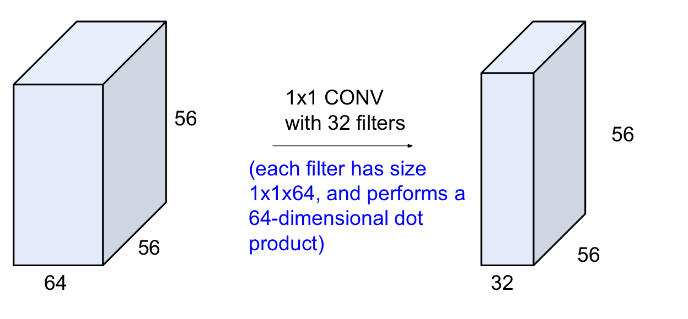 ] --- ## Convolutions - A bank of 256 filters (learned from data) - Each filter is 1d (it applies to a grayscale image) - Each filter is 16 x 16 pixels .center[ 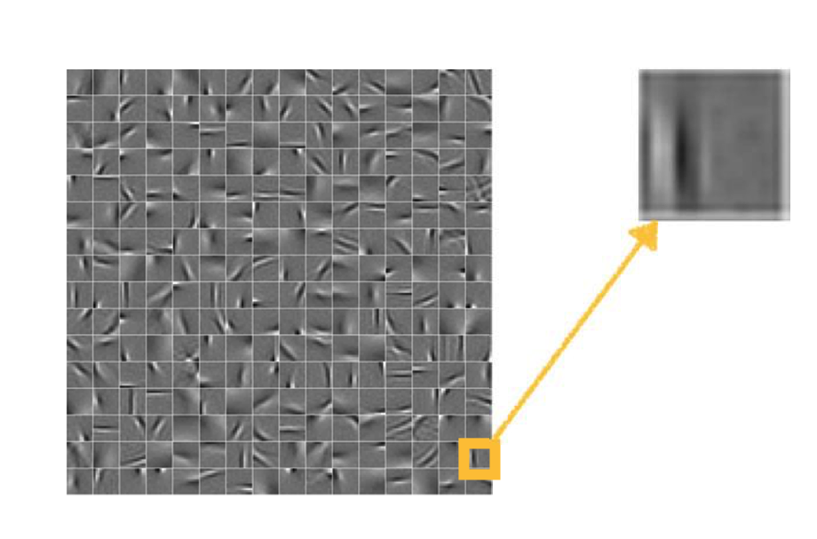 ] --- ## Convolutions - A bank of 256 filters (learned from data) - 3D filters for RGB inputs .center[ 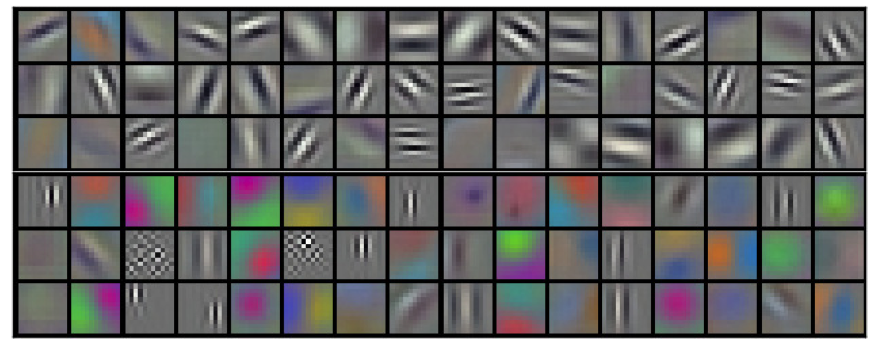 ] --- ## Convolutions ### Implementation - Arrange data for optimized matrix multiplication (using GEMM) - Makes life easier for backprop .center[ <img src="images/conv_implementation.png" style="width: 400px;" /> ] --- ## Downsampling - Downsampling by a factor $S$ amount to keeping only one every $S$ pixels, discarding others - Filter banks often incorporate or are followed by __2x__ output downsampling - Downsampling is often matched with an increase in the number of feature channels - Overall the volume of the tensors decreases slowly .center[ <img src="images/downsampling.png" style="width: 500px;" /> ] --- ## Spatial pooling .center[ <img src="images/spatial_pooling.png" style="width: 500px;" /> ] --- ## Pooling - Spatial dimension reduction - Local invariance - No parameters: max or average of 2x2 units .center[ <img src="images/pooling.png" style="width: 560px;" /> ] --- ## Pooling - Spatial dimension reduction - Local invariance - No parameters: max or average of 2x2 units .center[ <img src="images/maxpool.svg" style="width: 380px;" /> ] --- ## Max-Pooling 1d .center[ 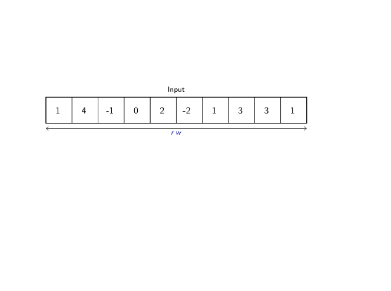<br/> ] .credit[Slide credit: F. Fleuret] --- ## Max-Pooling 1d .center[ 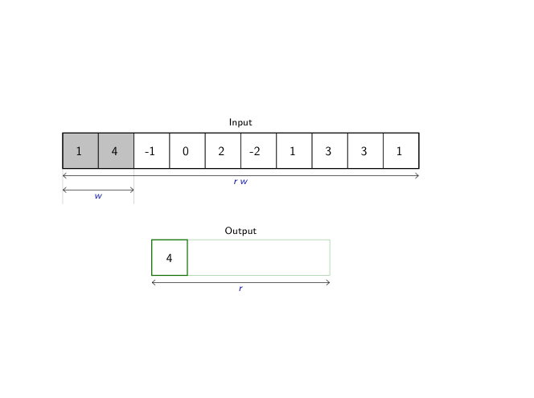<br/> ] .credit[Slide credit: F. Fleuret] --- ## Max-Pooling 1d .center[ 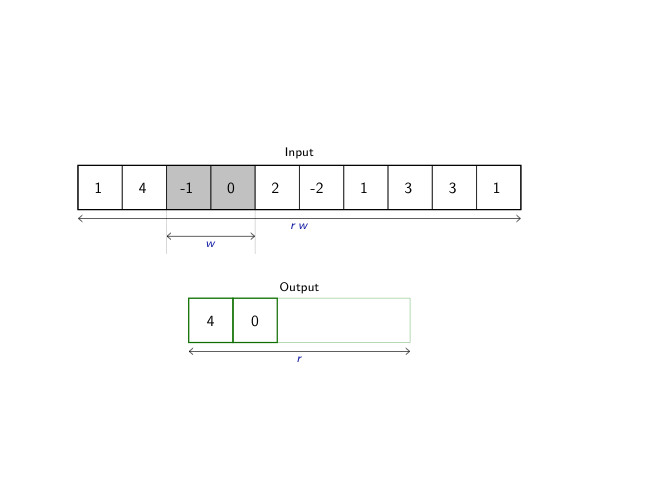<br/> ] .credit[Slide credit: F. Fleuret] --- ## Max-Pooling 1d .center[ 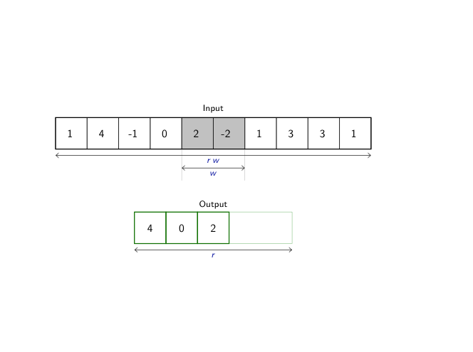<br/> ] .credit[Slide credit: F. Fleuret] --- ## Max-Pooling 1d .center[ <br/> ] .credit[Slide credit: F. Fleuret] --- ## Max-Pooling 1d .center[ <br/> ] .credit[Slide credit: F. Fleuret] --- ## Max-Pooling 1d .center[ <br/> ] .credit[Slide credit: F. Fleuret] --- ## Max-Pooling 2d .center[ <br/> ] .credit[Slide credit: F. Fleuret] --- ## Max-Pooling 2d .center[ <br/> ] .credit[Slide credit: F. Fleuret] --- ## Max-Pooling 2d .center[ <img src="images/maxpool2d_3.png" style="width: 600px;" /><br/> ] .credit[Slide credit: F. Fleuret] --- ## Max-Pooling 2d .center[ <br/> ] .credit[Slide credit: F. Fleuret] --- ## Max-Pooling 2d .center[ <br/> ] .credit[Slide credit: F. Fleuret] --- ## Max-Pooling 2d .center[ <img src="images/maxpool2d_6.png" style="width: 600px;" /><br/> ] .credit[Slide credit: F. Fleuret] --- ## Max-Pooling 2d .center[ <br/> ] .credit[Slide credit: F. Fleuret] --- ## Max-Pooling 2d .center[ <br/> ] .credit[Slide credit: F. Fleuret] --- ## Max-Pooling 2d .center[ <br/> ] .credit[Slide credit: F. Fleuret] --- ## Max-Pooling 2d .center[ <br/> ] .credit[Slide credit: F. Fleuret] --- ## Max-Pooling 2d .center[ <br/> ] .credit[Slide credit: F. Fleuret] --- ## Max-Pooling 2d .center[ <br/> ] .credit[Slide credit: F. Fleuret] --- ## Max-Pooling 2d .center[ <br/> ] .credit[Slide credit: F. Fleuret] --- ## Max-Pooling 2d .center[ <br/> ] .credit[Slide credit: F. Fleuret] --- ## Max-Pooling 2d .center[ <br/> ] .credit[Slide credit: F. Fleuret] --- ## Translation invariance from pooling .center[ <br/> ] .credit[Slide credit: F. Fleuret] --- ## Translation invariance from pooling .center[ <br/> ] .credit[Slide credit: F. Fleuret] --- ## Translation invariance from pooling .center[ <br/> ] .credit[Slide credit: F. Fleuret] --- ## Translation invariance from pooling .center[ <br/> ] .credit[Slide credit: F. Fleuret] --- ## Translation invariance from pooling .center[ <br/> ] .credit[Slide credit: F. Fleuret] --- ## Stochastic pooling Random pooling mask at each pass .center[ ] .citation.tiny[Fractional Max-Pooling, Graham, arXiv 2014] --- ## Spectral pooling Pooling in the frequency domain .center[ ] .citation.tiny[Spectral Representations for Convolutional Neural Networks, Rippel et al., NIPS 2015] --- ## ConvNet - Neural network with specialized connectivity structure - Stack multiple stage of feature extractors - Higher stages compute more global, more invariant features - Classification layer at the end <br> .center[ <br/> ] .citation.tiny[LeNet-5, LeCun, 1998] --- ## ConvNet A convolutional layer is composed of convolution, activation and downsampling layers. .center[ <br/> ] --- ## ConvNet ### Input -- ### Conv blocks - Convolution + activation (relu) - Convolution + activation (relu) - ... - Maxpooling 2x2 -- ### Output - Fully connected layers - Softmax --- ## Motivations ### Local connectivity - A neuron depends only on a few local neurons - Translation invariance -- ### Comparison to Fully connected - Parameter sharing - Make use of spatial structure -- ### Some analogy to animal bision .small[ Hubel & Wiesel, RECEPTIVE FIELDS OF SINGLE NEURONES IN THE CAT'S STRIATE CORTEX (1959) ] --- class:middle, center # Architectures --- ## Architectures `torchvision.models` provides a collection of reference networks for computer vision, e.g.: ```py import torchvision alexnet = torchvision.models.alexnet() ``` The trained models can be obtained by passing `pretrained = True` to the constructor(s). This may involve an heavy download given there size. --- ## LeNet5 10 classes, input 1 x 28 x 28 ```py (features): Sequential ( (0): Conv2d(1, 6, kernel_size=(5, 5), stride=(1, 1)) (1): ReLU (inplace) (2): MaxPool2d (size=(2, 2), stride=(2, 2), dilation=(1, 1)) (3): Conv2d(6, 16, kernel_size=(5, 5), stride=(1, 1)) (4): ReLU (inplace) (5): MaxPool2d (size=(2, 2), stride=(2, 2), dilation=(1, 1)) ) (classifier): Sequential ( (0): Linear (400 -> 120) (1): ReLU (inplace) (2): Linear (120 -> 84) (3): ReLU (inplace) (4): Linear (84 -> 10) ) ``` --- ## AlexNet .center[ <img src="images/alexnet.png" style="width: 600px;" /> ] .citation.tiny[Imagenet classification with deep convolutional neural networks, Krizhevsky et al., NIPS 2012 ] -- Input: 227x227x3 image First conv layer: kernel 11x11x3x96 stride 4 -- - Kernel shape: `(11,11,3,96)` - Output shape: `(55,55,96)` - Number of parameters: `34,944` - Equivalent MLP parameters: `43.7 x 1e9` .credit[Slide credit: C. Ollion & O. Grisel] --- ## AlexNet .center[ <img src="images/alexnet.png" style="width: 600px;" /> ] ```md INPUT: [227x227x3] CONV1: [55x55x96] 96 11x11 filters at stride 4, pad 0 MAX POOL1: [27x27x96] 3x3 filters at stride 2 CONV2: [27x27x256] 256 5x5 filters at stride 1, pad 2 MAX POOL2: [13x13x256] 3x3 filters at stride 2 CONV3: [13x13x384] 384 3x3 filters at stride 1, pad 1 CONV4: [13x13x384] 384 3x3 filters at stride 1, pad 1 CONV5: [13x13x256] 256 3x3 filters at stride 1, pad 1 MAX POOL3: [6x6x256] 3x3 filters at stride 2 FC6: [4096] 4096 neurons FC7: [4096] 4096 neurons FC8: [1000] 1000 neurons (softmax logits) ``` .credit[Slide credit: C. Ollion & O. Grisel] --- ## AlexNet ```py (features): Sequential ( (0): Conv2d(3, 64, kernel_size=(11, 11), stride=(4, 4), padding=(2, 2)) (1): ReLU (inplace) (2): MaxPool2d (size=(3, 3), stride=(2, 2), dilation=(1, 1)) (3): Conv2d(64, 192, kernel_size=(5, 5), stride=(1, 1), padding=(2, 2)) (4): ReLU (inplace) (5): MaxPool2d (size=(3, 3), stride=(2, 2), dilation=(1, 1)) (6): Conv2d(192, 384, kernel_size=(3, 3), stride=(1, 1), padding=(1, 1)) (7): ReLU (inplace) (8): Conv2d(384, 256, kernel_size=(3, 3), stride=(1, 1), padding=(1, 1)) (9): ReLU (inplace) (10): Conv2d(256, 256, kernel_size=(3, 3), stride=(1, 1), padding=(1, 1)) (11): ReLU (inplace) (12): MaxPool2d (size=(3, 3), stride=(2, 2), dilation=(1, 1)) ) (classifier): Sequential ( (0): Dropout (p = 0.5) (1): Linear (9216 -> 4096) (2): ReLU (inplace) (3): Dropout (p = 0.5) (4): Linear (4096 -> 4096) (5): ReLU (inplace) (6): Linear (4096 -> 1000) ) ``` --- ## Hierarchical representation .center[ <img src="images/lecunconv.png" style="width: 760px;" /> ] --- ## VGG-16 .center[ <img src="images/vgg.png" style="width: 600px;" /> ] .citation.tiny[Very deep convolutional networks for large-scale image recognition, Simonyan and Zisserman, NIPS 2014 ] --- ## Memory and Parameters ```md Activation maps Parameters INPUT: [224x224x3] = 150K 0 CONV3-64: [224x224x64] = 3.2M (3x3x3)x64 = 1,728 CONV3-64: [224x224x64] = 3.2M (3x3x64)x64 = 36,864 POOL2: [112x112x64] = 800K 0 CONV3-128: [112x112x128] = 1.6M (3x3x64)x128 = 73,728 CONV3-128: [112x112x128] = 1.6M (3x3x128)x128 = 147,456 POOL2: [56x56x128] = 400K 0 CONV3-256: [56x56x256] = 800K (3x3x128)x256 = 294,912 CONV3-256: [56x56x256] = 800K (3x3x256)x256 = 589,824 CONV3-256: [56x56x256] = 800K (3x3x256)x256 = 589,824 POOL2: [28x28x256] = 200K 0 CONV3-512: [28x28x512] = 400K (3x3x256)x512 = 1,179,648 CONV3-512: [28x28x512] = 400K (3x3x512)x512 = 2,359,296 CONV3-512: [28x28x512] = 400K (3x3x512)x512 = 2,359,296 POOL2: [14x14x512] = 100K 0 CONV3-512: [14x14x512] = 100K (3x3x512)x512 = 2,359,296 CONV3-512: [14x14x512] = 100K (3x3x512)x512 = 2,359,296 CONV3-512: [14x14x512] = 100K (3x3x512)x512 = 2,359,296 POOL2: [7x7x512] = 25K 0 FC: [1x1x4096] = 4096 7x7x512x4096 = 102,760,448 FC: [1x1x4096] = 4096 4096x4096 = 16,777,216 FC: [1x1x1000] = 1000 4096x1000 = 4,096,000 TOTAL activations: 24M x 4 bytes ~= 93MB / image (x2 for backward) TOTAL parameters: 138M x 4 bytes ~= 552MB (x2 for plain SGD, x4 for Adam) ``` .credit[Slide credit: C. Ollion & O. Grisel] --- ## Memory and Parameters ```md Activation maps Parameters INPUT: [224x224x3] = 150K 0 *CONV3-64: [224x224x64] = 3.2M (3x3x3)x64 = 1,728 *CONV3-64: [224x224x64] = 3.2M (3x3x64)x64 = 36,864 POOL2: [112x112x64] = 800K 0 CONV3-128: [112x112x128] = 1.6M (3x3x64)x128 = 73,728 CONV3-128: [112x112x128] = 1.6M (3x3x128)x128 = 147,456 POOL2: [56x56x128] = 400K 0 CONV3-256: [56x56x256] = 800K (3x3x128)x256 = 294,912 CONV3-256: [56x56x256] = 800K (3x3x256)x256 = 589,824 CONV3-256: [56x56x256] = 800K (3x3x256)x256 = 589,824 POOL2: [28x28x256] = 200K 0 CONV3-512: [28x28x512] = 400K (3x3x256)x512 = 1,179,648 CONV3-512: [28x28x512] = 400K (3x3x512)x512 = 2,359,296 CONV3-512: [28x28x512] = 400K (3x3x512)x512 = 2,359,296 POOL2: [14x14x512] = 100K 0 CONV3-512: [14x14x512] = 100K (3x3x512)x512 = 2,359,296 CONV3-512: [14x14x512] = 100K (3x3x512)x512 = 2,359,296 CONV3-512: [14x14x512] = 100K (3x3x512)x512 = 2,359,296 POOL2: [7x7x512] = 25K 0 *FC: [1x1x4096] = 4096 7x7x512x4096 = 102,760,448 FC: [1x1x4096] = 4096 4096x4096 = 16,777,216 FC: [1x1x1000] = 1000 4096x1000 = 4,096,000 TOTAL activations: 24M x 4 bytes ~= 93MB / image (x2 for backward) TOTAL parameters: 138M x 4 bytes ~= 552MB (x2 for plain SGD, x4 for Adam) ``` .credit[Slide credit: C. Ollion & O. Grisel] --- ## VGG-19 ```py (0): Conv2d(3, 64, kernel_size=(3, 3), stride=(1, 1), padding=(1, 1)) (1): ReLU (inplace) (2): Conv2d(64, 64, kernel_size=(3, 3), stride=(1, 1), padding=(1, 1)) (3): ReLU (inplace) (4): MaxPool2d (size=(2, 2), stride=(2, 2), dilation=(1, 1)) (5): Conv2d(64, 128, kernel_size=(3, 3), stride=(1, 1), padding=(1, 1)) (6): ReLU (inplace) (7): Conv2d(128, 128, kernel_size=(3, 3), stride=(1, 1), padding=(1, 1)) (8): ReLU (inplace) (9): MaxPool2d (size=(2, 2), stride=(2, 2), dilation=(1, 1)) (10): Conv2d(128, 256, kernel_size=(3, 3), stride=(1, 1), padding=(1, 1)) (11): ReLU (inplace) (12): Conv2d(256, 256, kernel_size=(3, 3), stride=(1, 1), padding=(1, 1)) (13): ReLU (inplace) (14): Conv2d(256, 256, kernel_size=(3, 3), stride=(1, 1), padding=(1, 1)) (15): ReLU (inplace) (16): Conv2d(256, 256, kernel_size=(3, 3), stride=(1, 1), padding=(1, 1)) (17): ReLU (inplace) (18): MaxPool2d (size=(2, 2), stride=(2, 2), dilation=(1, 1)) (19): Conv2d(256, 512, kernel_size=(3, 3), stride=(1, 1), padding=(1, 1)) (20): ReLU (inplace) (21): Conv2d(512, 512, kernel_size=(3, 3), stride=(1, 1), padding=(1, 1)) (22): ReLU (inplace) (23): Conv2d(512, 512, kernel_size=(3, 3), stride=(1, 1), padding=(1, 1)) (24): ReLU (inplace) (25): Conv2d(512, 512, kernel_size=(3, 3), stride=(1, 1), padding=(1, 1)) (26): ReLU (inplace) (27): MaxPool2d (size=(2, 2), stride=(2, 2), dilation=(1, 1)) (28): Conv2d(512, 512, kernel_size=(3, 3), stride=(1, 1), padding=(1, 1)) (29): ReLU (inplace) ... ``` --- ## VGG-19 ... ```py (30): Conv2d(512, 512, kernel_size=(3, 3), stride=(1, 1), padding=(1, 1)) (31): ReLU (inplace) (32): Conv2d(512, 512, kernel_size=(3, 3), stride=(1, 1), padding=(1, 1)) (33): ReLU (inplace) (34): Conv2d(512, 512, kernel_size=(3, 3), stride=(1, 1), padding=(1, 1)) (35): ReLU (inplace) (36): MaxPool2d (size=(2, 2), stride=(2, 2), dilation=(1, 1)) (classifier): Sequential ( (0): Linear (25088 -> 4096) (1): ReLU (inplace) (2): Dropout (p = 0.5) (3): Linear (4096 -> 4096) (4): ReLU (inplace) (5): Dropout (p = 0.5) (6): Linear (4096 -> 1000) ) ``` --- ## GoogLeNet / Inception Szegedy et al. (2015) also introduce the idea of "auxiliary classifiers" to help the propagation of the gradient in the early layers. This is motivated by the reasonable performance of shallow networks that indicates early layers already encode informative and invariant features. .center[ <img src="images/googlenet.png" style="width: 700px;" /> ] --- ## GoogLeNet / Inception The resulting GoogLeNet has 12 times less parameters than AlexNet and is more accurate on ILSVRC14 (Szegedy et al., 2015). .center[ <img src="images/googlenet.png" style="width: 700px;" /> ] It was later extended with batch-normalization (Ioffe and Szegedy, 2015) and pass-through a la resnet (Szegedy et al., 2016) --- ## GoogLeNet / Inception <br/> .center[ ] .credit[Slide credit: A. Karpathy] --- ## A saturation point If we continue stacking more layers on a CNN: .center[ <img src="images/depth_problem.png" style="width: 700px;" /> ] -- .center[.red[Deeper models are harder to optimize]] .credit[Slide credit: J. Johnson] --- .left-column[ ## ResNet ] .citation.tiny[ .left-column[Deep residual learning for image recognition, K. He et al., CVPR 2016. ] ] .right-column[ .center[ <img src="images/resnet.png" style="width: 290px;" /> ] ] A block learns the residual w.r.t. identity .center[ <img src="images/residualblock.png" style="width: 290px;" /> ] -- - Good optimization properties --- .left-column[ ## ResNet ] .citation.tiny[ .left-column[ Deep residual learning for image recognition, K. He et al., CVPR 2016. ] ] .right-column[ .center[ <img src="images/resnet.png" style="width: 290px;" /> ] ] Even deeper models: 34, 50, 101, 152 layers --- .left-column[ ## ResNet ] .citation.tiny[ .left-column[ Deep residual learning for image recognition, K. He et al., CVPR 2016. ] ] .right-column[ .center[ <img src="images/resnet.png" style="width: 290px;" /> ] ] ResNet50 Compared to VGG: #### Superior accuracy in all vision tasks <br/>**5.25%** top-5 error vs 7.1% -- #### Less parameters <br/>**25M** vs 138M -- #### Computational complexity <br/>**3.8B Flops** vs 15.3B Flops -- #### Fully Convolutional until the last layer --- ## ResNet Performance on ImageNet .center[ <img src="images/resnet_1.png" style="width: 700px;" /> ] --- ## ResNet The output of a residual network can be understood as an ensemble, which explains in part its stability .center[ <img src="images/resnet_2.png" style="width: 650px;" /> ] .citation.tiny[Residual Networks Behave Like Ensembles of Relatively Shallow Networks, A. Veit et al., NIPS 2016] --- ## ResNet Results .center[ <img src="images/resnet_3.png" style="width: 700px;" /> ] --- ## ResNet Results .center[ <img src="images/resnet_8.png" style="width: 550px;" /> ] --- ## ResNet In PyTorch: ```py def make_resnet_block(nb_channels , kernel_size = 3): return nn.Sequential( nn.Conv2d(nb_channels , nb_channels , kernel_size = kernel_size , padding = (kernel_size - 1) // 2), nn.BatchNorm2d(nb_channels), nn.ReLU(inplace = True), nn.Conv2d(nb_channels , nb_channels , kernel_size = kernel_size , padding = (kernel_size - 1) // 2), nn.BatchNorm2d(nb_channels), ) ``` ```py ... self.resnet_blocks = nn.ModuleList() for k in range(nb_residual_blocks): self.resnet_blocks.append(make_resnet_block(nb_channels , 3)) ... ``` --- ## Deeper is better .center[ <img src="images/deeper.png" style="width: 660px;" /> ] .citation.tiny[ from Kaiming He slides "Deep residual learning for image recognition." ICML. 2016. ] --- ## Inception-V4 / -ResNet-V2 Deep, modular and state-of-the-art</br> Achieves **3.1% top-5** classification error on imagenet .center[ <img src="images/inception1.png" style="width: 480px;" /> ] .citation.tiny[Inception-v4, inception-resnet and the impact of residual connections on learning, C. Szegedy et al., 2016 ] .credit[Slide credit: C. Ollion & O. Grisel] --- ## Inception-V4 / -ResNet-V2 More building blocks engineering... .center[ <img src="images/inception2.png" style="width: 500px;" /> ] .citation.tiny[Inception-v4, inception-resnet and the impact of residual connections on learning, C. Szegedy et al., 2016 ] .credit[Slide credit: C. Ollion & O. Grisel] -- - Active area or research - See also DenseNets, Wide ResNets, Fractal ResNets, ResNeXts, Pyramidal ResNets... --- ## Comparison of models Top 1-accuracy, performance and size on ImageNet .center[ <img src="images/architectures.png" style="width: 760px;" /> ] .citation.tiny[An Analysis of Deep Neural Network Models for Practical Applications, Canziani et al., 2016 ] --- ## Comparison of models Forward pass time and power consumption .center[ <img src="images/deep_5.png" style="width: 760px;" /> ] .citation.tiny[An Analysis of Deep Neural Network Models for Practical Applications, Canziani et al., 2016 ] --- ## Comparison of models .center[ ] .credit[Slide credit: A. Vedaldi] --- ## Comparison of models 3 x more accurate in 3 years .center[ ] 101 ResNet Layers same size/speed as 16 VGG-VD layers .credit[Slide credit: A. Vedaldi] --- ## Comparison of models Number of parameters is about the same .center[ <img src="images/deep_3.png" style="width: 760px;" /> ] .credit[Slide credit: A. Vedaldi] --- ## Comparison of models 5 x slower .center[ ] .credit[Slide credit: A. Vedaldi] --- ## Recap - Neural networks - Activation functions - Deep regularization - Convolutional layers - CNN architectures - Practical PyTorch: Sentiment analysis